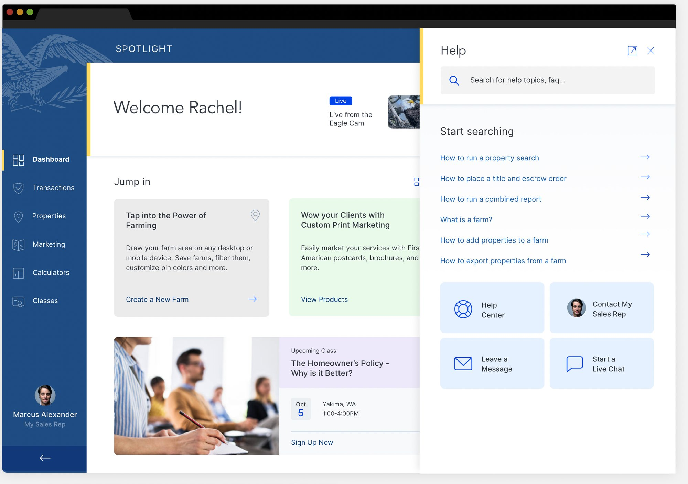
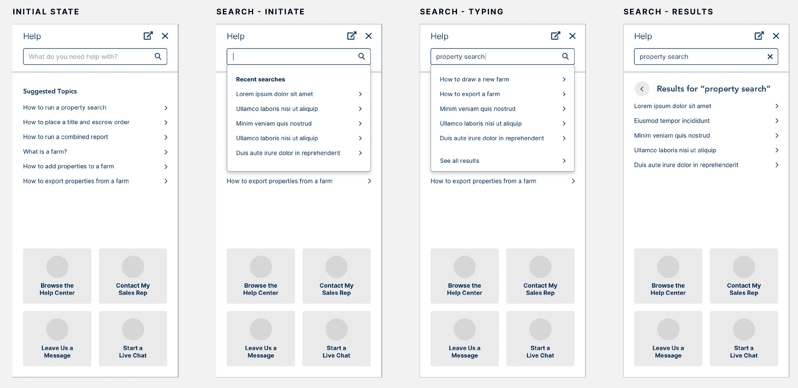
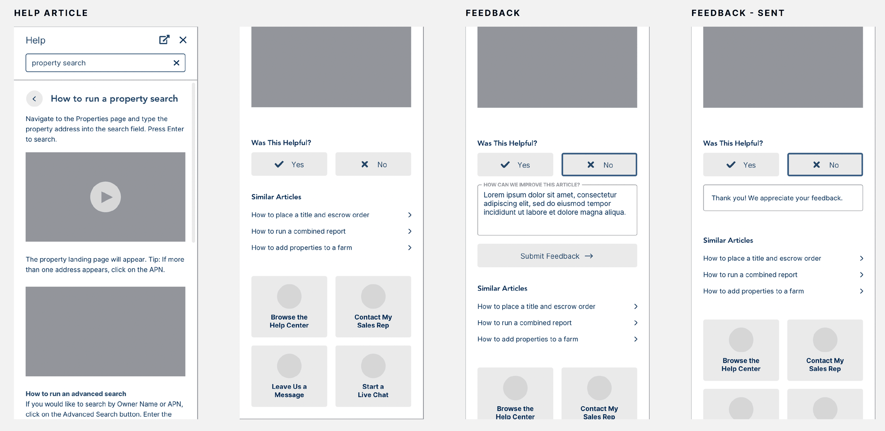
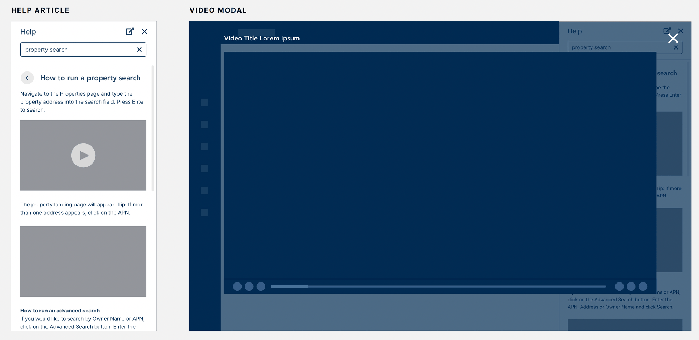
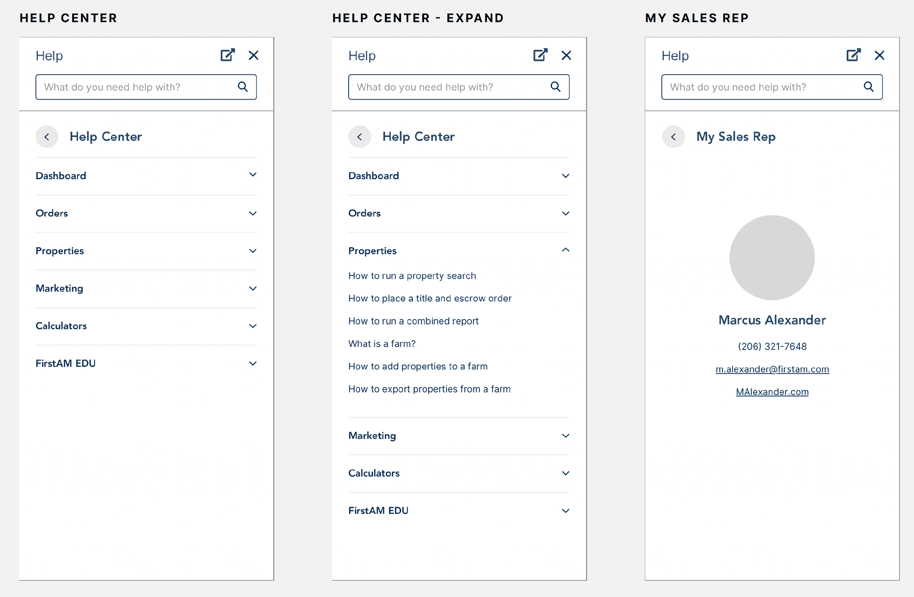
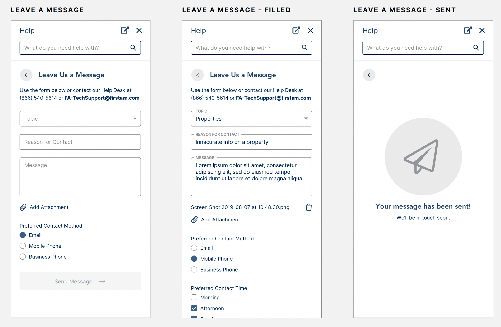
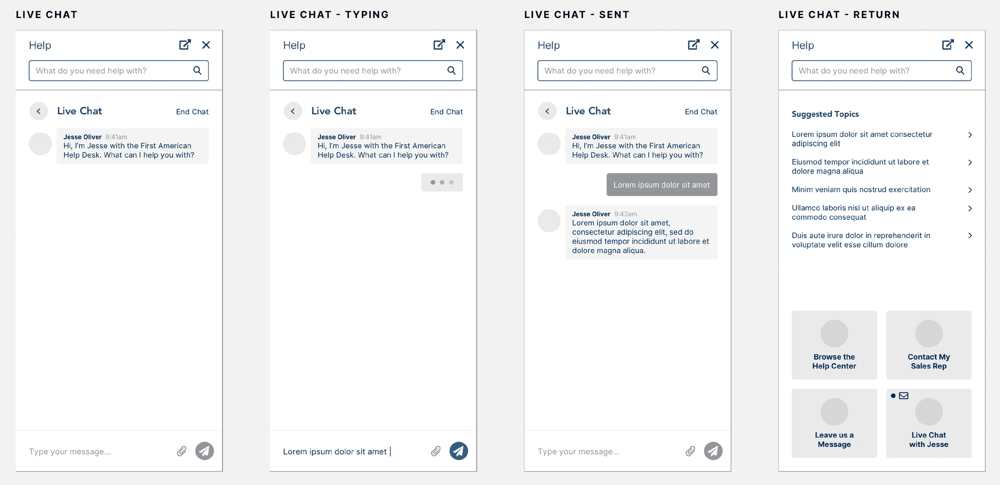
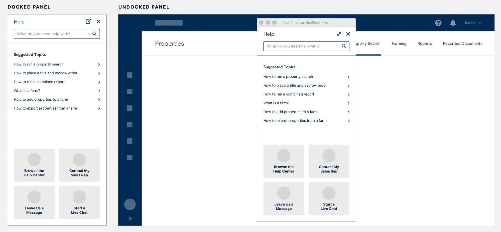
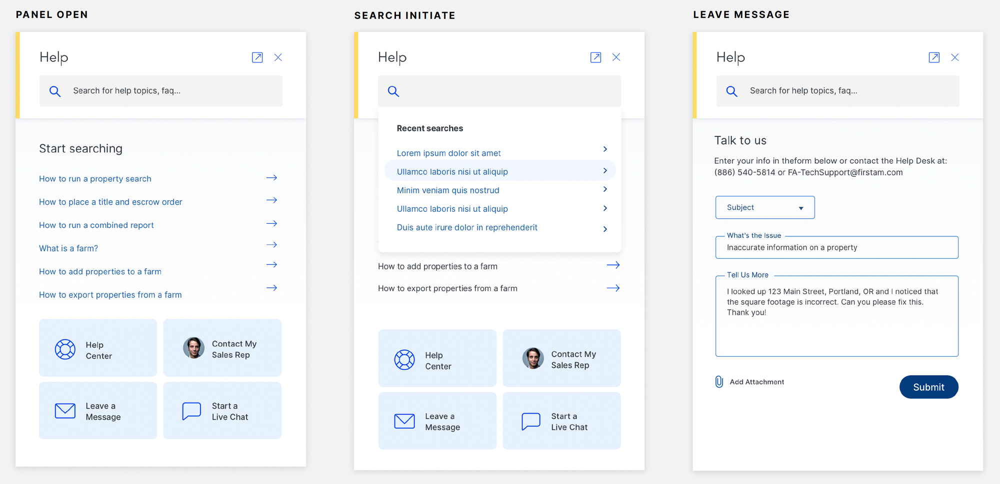
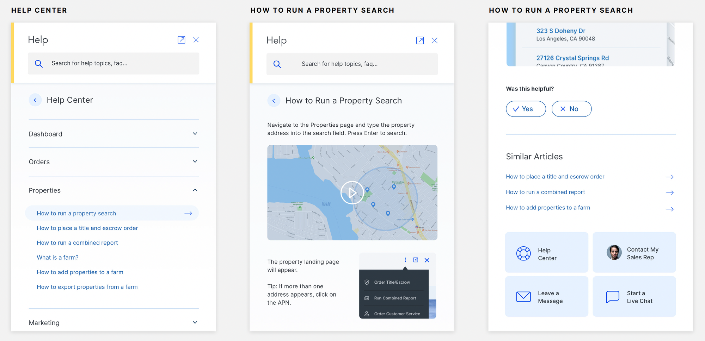

My Role
I designed the Help Center and Chat Support experience for IgniteRE in Figma, from wireframes to high-fidelity screens.
IgniteRE is a dynamic real estate management platform used by real estate agents and property managers to streamline their daily tasks. As the platform grew in complexity and features, users began to experience friction when they needed support. They often struggled to find timely assistance, which led to frustration and lower satisfaction.
To address these pain points, we designed and integrated a Help Center and Chat Support directly inside the IgniteRE application, improving the overall user experience.

Role
UX/UI Design: Help Center & Chat Support experience
Tool
Figma
Platform
IgniteRE web application (in-app help panel)
Users
Real estate agents and property managers
Design Process
The UX process at a glance.
Problem
Support lived outside the app.
Problem statement: IgniteRE users had no fast, in-context way to get help. Support lived outside the app, tickets were slow, and the same questions kept coming back, so users got frustrated and the support team got overloaded.
Empathize & Discover
Understanding what getting help felt like for IgniteRE's users as the platform grew.
Target users
Real estate agents
Rely on IgniteRE for: streamlining daily tasks across a growing feature set.
Need from support: quick, in-context answers without leaving their work.
Property managers
Rely on IgniteRE for: managing properties and day-to-day workflows.
Need from support: timely help for urgent problems, and self-serve guidance for common how-tos.
What users were experiencing
Support lived outside the app
The existing support system was external and often time-consuming to reach.
Slow ticket resolution
Traditional ticketing meant long waits, hurting users who needed urgent help.
Repeating the same questions
Similar feature questions created repetitive requests and more work for support.
Growing complexity
As features were added, users hit more friction and struggled to find timely help.
The "before" support journey
This journey is based only on the pain points above.
Hit a problem
Look for help
Wait
Outcome
Define
From challenges to clear objectives.
| # | Challenge | Objective | Design solution |
|---|---|---|---|
| 1 | Difficulty finding support resources. The support system was external and time-consuming to access | Improve accessibility to support. Make help resources easy to reach within the app | In-app Help panel plus a persistent chat widget in the same place on every page |
| 2 | Slow resolution times. Ticketing caused long waits for urgent issues | Reduce resolution time. Give users faster, more efficient support | Chatbot first response with a live-agent handoff that keeps the user's context |
| 3 | High volume of repetitive inquiries. Similar feature questions overloaded the support team | Enhance self-service. Let users solve common problems on their own with minimal effort | Searchable knowledge base with categories and step-by-step guides with visuals |
| – | Support features could disrupt the existing UI | Deliver a seamless experience. Integrate support without disrupting the app's interface and flow | Panel that matches the app's look, feel and branding: unobtrusive but always available |
How Might We…
Ideate
Two complementary concepts, an information architecture and a user flow.
In-app Help Center
Make help content easy to find, organized and actionable.
- Searchable knowledge base: keyword search with predictive results
- Categorized content: intuitive categories that mirror the product
- Step-by-step guides & visuals: instructions paired with screenshots, GIFs and videos
Chat Support
Focus on ease of use, accessibility and efficiency.
- Persistent chat widget: always in the same place, no page change needed
- Chatbot assistance: answers FAQs or points to relevant Help Center articles
- Live-agent handoff: escalate when the bot can't resolve the issue, with context passed along
- Real-time feedback: users rate the support experience
Information architecture
Help content was organized into categories that match the areas of the product users already know.
flowchart LR
H["Help panel
(search + suggested topics)"] --> HC["Help Center"]
H --> SR["Contact My Sales Rep"]
H --> LM["Leave a Message"]
H --> LC["Start a Live Chat"]
HC --> D["Dashboard"]
HC --> O["Orders"]
HC --> P["Properties"]
HC --> M["Marketing"]
HC --> C["Calculators"]
HC --> E["FirstAM EDU"]
P --> P1["How to run a property search"]
P --> P2["How to place a title and escrow order"]
P --> P3["How to run a combined report"]
P --> P4["What is a farm?"]
P --> P5["How to add / export properties from a farm"]
Categories and sample articles are taken from the project wireframes. The core categories in the brief were Dashboard, Orders, Properties and Marketing.
User flow: from self-service to live agent
flowchart TD
A(["User is working on any IgniteRE page"]) --> B["Opens the persistent Help / Chat widget"]
B --> C{"How do they want help?"}
C -->|Search| D["Types keywords → predictive results"]
D --> E["Opens a step-by-step article
with screenshots, GIFs or video"]
E --> F{"Was this helpful?"}
F -->|Yes| Z(["Resolved on their own"])
F -->|No| G["Shares feedback → similar articles
or starts a chat"]
C -->|Chat| H["Chatbot answers the FAQ
or suggests articles"]
G --> H
H --> I{"Resolved?"}
I -->|Yes| R["User rates the experience"]
I -->|No| J["Smooth handoff to a live agent"]
J --> K["Context passed along:
previous interactions + issue details"]
K --> L["Agent resolves the issue"]
L --> R
C -->|Prefer async| M["Leave a Message
topic, reason, attachment, contact preference"]
R --> Z2(["Resolved, and feedback feeds improvements"])
Design
From wireframes to a native-feeling help panel.
Design principles
Help without leaving the page
A side panel opens next to the current screen. It can be docked or undocked into its own window.
One consistent entry point
The chat/help icon sits in the same location across the app.
Self-service first, human always available
Search and suggested topics come first; four routes are always visible: Help Center · Contact My Sales Rep · Leave a Message · Start a Live Chat.
Show, don't just tell
Articles combine step-by-step text with screenshots, GIFs and video.
Feels native to IgniteRE
Look and feel match the app's existing design and branding.
Wireframes
Low-fidelity wireframes in Figma mapped every state of the help experience before any visual design.


More wireframes: video modal, Help Center categories, Sales Rep, Leave a Message, Live Chat, docked/undocked panel





High-fidelity mockups
The wireframes then became polished, on-brand screens. Key details: a soft accent edge marking the panel, clear iconography for the four support routes, and generous spacing for readability.


Key features delivered
| Feature | What it does | Objective it serves |
|---|---|---|
| Searchable knowledge base | Keyword search with predictive results and query-based articles | Self-service, accessibility |
| Categorized content | Dashboard, Orders, Properties, Marketing (plus more) for easy browsing | Self-service |
| Step-by-step guides | Detailed instructions with screenshots, GIFs and videos | Self-service |
| Persistent chat widget | Same location everywhere; start a conversation without leaving the page | Accessibility, seamless experience |
| Chatbot assistance | Answers FAQs or links to relevant Help Center articles | Faster resolution, fewer repetitive inquiries |
| Live-agent handoff | Seamless escalation with prior interactions and issue details passed along | Faster resolution |
| Real-time feedback | Users rate the support experience and articles | Continuous improvement |
| Seamless integration | Matches IgniteRE's look, feel and branding; unobtrusive but always available | Seamless experience |
Design system & consistency
Native visual language
Reused IgniteRE's existing visual language and branding, so support feels like part of the product rather than a bolt-on.
Repeatable panel pattern
Header (title, undock, close) → search → content → persistent support shortcuts, the same in every state.
Consistent components
List rows with chevrons, accordion categories, floating-label fields, Yes/No feedback buttons and quick-action tiles.
Test & Iterate
Validated with real users, refined after launch.
flowchart TB
subgraph PRE["Pre-launch"]
direction LR
A["Design"] --> B["Usability testing
with real users"] --> C["Insights"] --> D["Refine chatbot flow"]
end
subgraph POST["Post-launch"]
direction LR
E["Launch"] --> F["In-app surveys +
behavior analytics"] --> G["Ongoing improvements"]
G -- feedback loop --> F
end
PRE --> POST
Usability testing
Ran several rounds of usability testing with real users, observing how they used both the Help Center and Chat Support.
Users liked how simple and efficient the Help Center search was. We adjusted the chatbot's flow to handle more nuanced queries.
Feedback loops
Kept collecting feedback through in-app surveys and user behavior analytics.
Made ongoing improvements to refine the experience and make sure users got the most value from the new features.
Results & Impact
Measurable impact on the user experience.
Faster issue resolution
Chat Support led to a 50% reduction in response times, with many users now getting immediate answers from the chatbot or a live agent.
More self-service
30% of users resolved their issues independently, which reduced the load on live support agents and raised overall satisfaction.
Less frustration
Users reported feeling more confident in the app, with 40% saying they now feel more empowered to solve problems on their own.
Better engagement
Always-available support led to a 20% increase in user engagement, with users spending more time in the app knowing help was a click away.
Positive feedback
User satisfaction scores rose 25%, especially for the clarity and usefulness of Help Center articles and the responsiveness of live chat.
All visuals come from the original IgniteRE Help Center project file. All metrics are as reported in the project documentation.
Learnings & Conclusion
What this project taught me.
Integrating the Help Center and Chat Support significantly improved the experience for IgniteRE users. Quick access to helpful resources and real-time support reduced frustration, improved task completion times and increased user satisfaction.
- In-context support matters. Putting help inside the workflow, with a consistent entry point and no page change, removed the biggest barrier: getting to help at all.
- Self-service and human support work together. Good search, clear categories and visual guides take care of repetitive questions, so live agents can focus on what really needs a person.
- Handoffs should carry context. Passing prior interactions and issue details to the live agent means users never have to repeat themselves.
- Launch is the start of iteration. Usability testing shaped the chatbot flow, and in-app surveys plus analytics keep improving the experience after release.
- Good support UX helps the business too. The project improved the customer experience and also made support operations more efficient for the IgniteRE team.